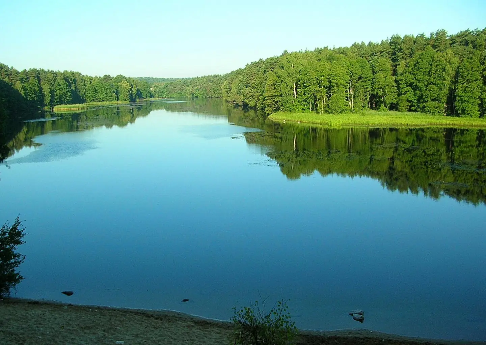
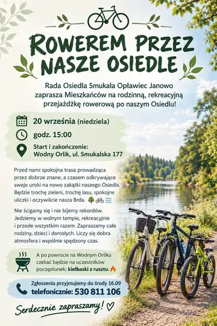
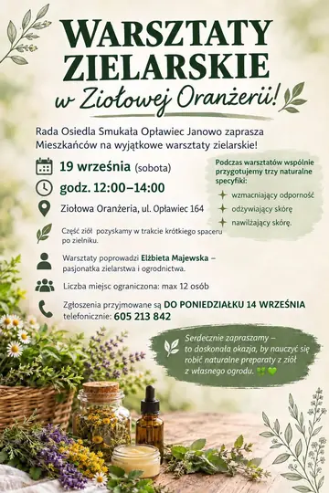
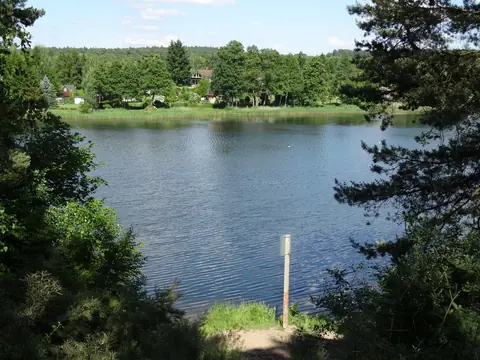
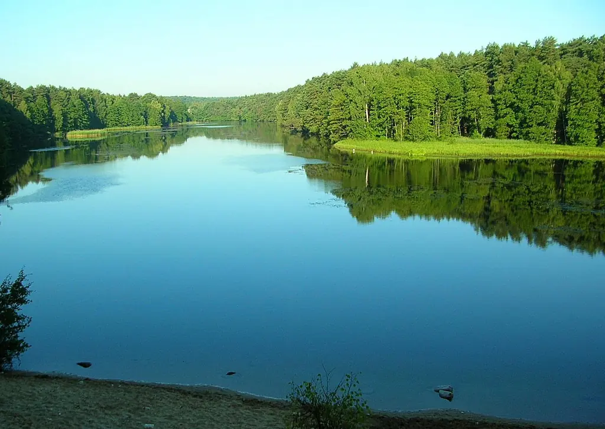

Opławiec
Dawna wieś wzmiankowana już w XVI wieku, włączona do Bydgoszczy w 1954 roku. Nazwa pochodzi od słów płynąć, pławić, wpław.

Strona Rady Osiedla: ogłoszenia, terminy spotkań, protokoły i dokumenty w jednym miejscu.
Wodny Orlik, ul. Smukalska 177


Spotkania są otwarte dla mieszkańców. Pisma do Rady można przekazać osobiście na spotkaniu albo wysłać e-mailem.
W każdy pierwszy poniedziałek miesiąca, godz. 18:30-19:30, Wodny Orlik, ul. Smukalska 177.
Gdy termin wypada w święto, spotkanie przenosimy - nowa data pojawia się w ogłoszeniach.
Terminy wyliczone ze stałego harmonogramu - w panelu Rada sama potwierdza lub zmienia daty.
Wszystko do pobrania w jednym miejscu, uporządkowane według rodzaju i roku.
Tu po każdym spotkaniu pojawi się protokół w PDF - dodawany przez Radę w prostym panelu.
Zarząd, członkowie Rady i komisje. Stan zgodny z obecną stroną (aktualizacja z 1.06.2026).
Trzy dawne wsie nad Brdą, dziś jedno osiedle Bydgoszczy.
Dawna wieś wzmiankowana już w XVI wieku, włączona do Bydgoszczy w 1954 roku. Nazwa pochodzi od słów płynąć, pławić, wpław.

Smukała Dolna leży na wąskim pasie zieleni między Brdą a lasem; do Bydgoszczy włączono ją w 1977 roku. Nazwa pochodzi od słowa smug - wąski pas zieleni.

Zakole Brdy, nadrzeczny las i Stanica Wodna Janowo.
Napisz do Rady albo przyjdź na spotkanie w pierwszy poniedziałek miesiąca.